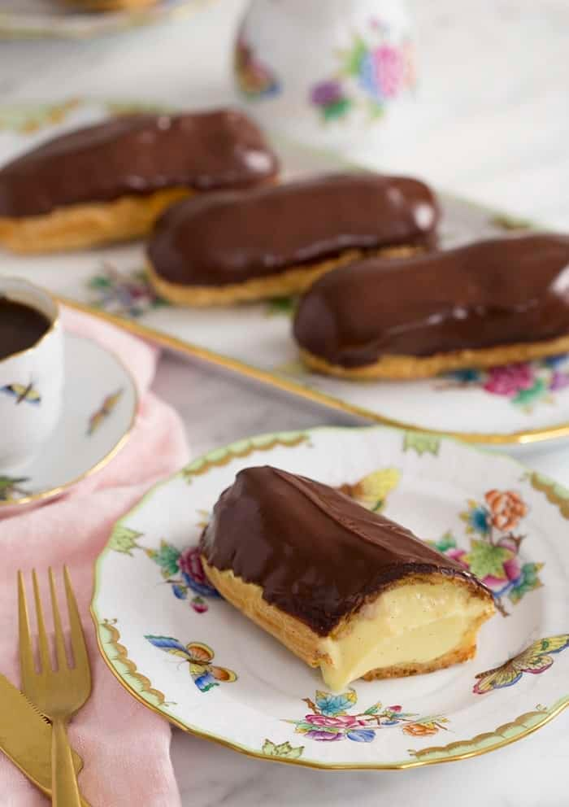

Eclair

Description
This is a recipe to make Eclairs
Ingredients
Cream Patisserie
- 15mL water
- 2 cups whole milk
- 1-1.5 tbsp vanilla extract
- 6 egg yolks
- 40g sugar
- 25g cornstarch
- 1 tbs cold butter
- 1/2 cup heavy cream
- 1/2 heavy cream whipped, folded in the end
Pastry
- 1 cup water
- 8 tbsp (1 stick) unsalted butter
- 1/2 tsp salt
- 1 1/2 tsp sugar
- 1 cup all-purpose flour
- 3 eggs plus 1 extra if needed
Egg Wash
Chocolate Glaze
- 1/2 cup heavy cream
- 4 oz semi-sweet chocolate
Procedure
- Preheat the oven to 425 Fahrenheit. Line a sheet pan with parchment paper. In a large saucepan, bring the water, butter, salt and sugar to a rolling boil over medium-high heat. When it boils, immediately take the pan off the heat. Stirring with a wooden spoon, add all the flour at once and stir hard until all the flour is incorporated, 30 to 60 seconds. Return to the heat and cook, stirring, 30 seconds. Scrape the mixture into a mixer fitted with a paddle attachment (or use a hand mixer). Mix at medium speed. With the mixer running, add 3 eggs, 1 egg at a time. Stop mixing after each addition to scrape down the sides of the bowl. Mix until the dough is smooth and glossy and the eggs are completely incorporated. The dough should be thick, but should fall slowly and steadily from the beaters when you lift them out of the bowl. If the dough is still clinging to the beaters, add the remaining 1 egg and mix until incorporated.
- Using a pastry bag fitted with a large plain tip, pipe fat lengths of dough (about the size and shape of a jumbo hot dog) onto the lined baking sheet, leaving 2 inches of space between them. You can also make fat dots if you want ti make smaller servings. You should have 8 to 10 lengths. If they look horrible like the ones pictured above, don't worry! The egg wash will fix it.
- Egg Wash: In a bowl, whisk the egg and water together. Brush the surface of each eclair with the egg wash. Use your fingers to smooth out any bumps of points of dough that remain on the surface.
- Bake 15 minutes, then reduce the heat to 375 degrees and bake until puffed up and light golden brown, about 25 minutes more. Try not to open the oven door too often during the baking. Let cool on the baking sheet.
- Fit a medium-size plain pastry tip over your index finger and use it to make a hole in the end of each eclair (or just use your fingertip). Using a pastry bag fitted with a medium-size plain tip, gently pipe the custard into the eclairs, using only just enough to fill the inside (don't stuff them full).
- For the Glaze: In a small saucepan, heat the cream over medium heat just until it boils. Immediately turn off the heat.
- Put the chocolate in a medium bowl. Pour the hot cream over the chocolate and whisk until melted and smooth.
- Set aside and keep warm. The glaze can be made up to 48 hours in advance. Cover and refrigerate until ready to use, and rewarm in a microwave or over hot water when ready to use.
- Dip the tops of the eclairs in the warm chocolate glaze and set on a sheet pan. Chill, uncovered, at least 1 hour to set the glaze. Serve chilled.
Return to Recipe List